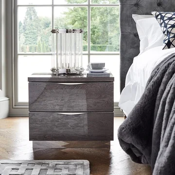

Stonehouse NightStand
The Stonehouse Nightstand combines timeless design with practical functionality. Crafted with a sturdy build and finished in a sleek, stone-grey hue, this nightstand features two spacious drawers that provide ample storage for your bedside essentials. The elegant drawer pulls and clean lines add a touch of sophistication to any bedroom decor. With its durable construction and versatile design, the Stonehouse Nightstand is the perfect addition to both modern and classic interiors, offering style and convenience right at your bedside.
$180
Dimensions: 22"W x 18"D x 24"H
Material: Wood, Metal
Color: Stone Grey
Features: Sleek, stone-grey finish, Two spacious drawers for ample storage